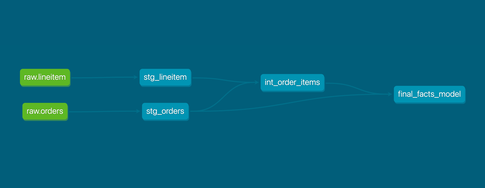
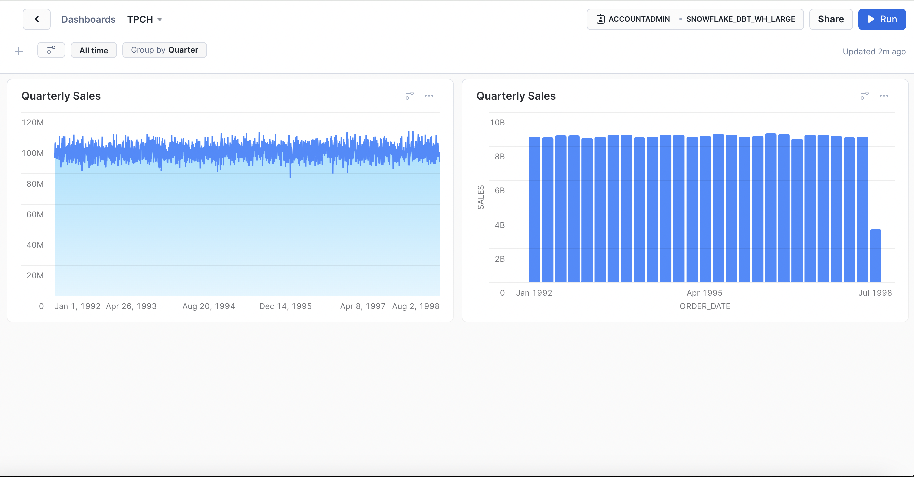

Snowflake enables users to construct data-intensive applications easily, freeing them from operational complexities. This enables a shift in focus towards data analysis and insights rather than the management of infrastructure.
dbt serves as a transformation workflow that facilitates rapid and collaborative deployment of analytics code. It made some of the tasks easier by following software engineering principles such as modularity, portability, continuous integration and deployment (CI/CD), and documentation. With dbt,we can construct high-quality data pipelines, leveraging cloud data platforms like Snowflake for data transformation within the data warehouse.
We will build a set of data analytics pipelines for retail data(TPC-H sample data available in Snowflake) leveraging dbt and Snowflake, making use of best practices like data quality tests and documentation. We'll be transforming raw retail data into a consumable orders model that's ready for visualization.
The key configurations to point out in the file with relation to the work that we're going to do are mentioned in the materialised config and snowflake_warehouse config. In the first step, we read the raw data from source I.e., orders and line item. We then write the models for staging data and then store the data in stg_orders and stg_lineitem. As a next step, we are creating an intermediate table int_order_items to create calculated fields like item discount amount, item tax amount, gross item sales amount and net item sales amount. As a last step of transformation, we are calculating the total sales for all the products in the table.
The final facts model created as part of the transformation pipeline is then used for analysing the sales of all the items using Snowsight Dashboards. This way, dbt is used for creating a transformation pipeline on top of a data warehouse(in this case,Snowflake) so as to make the models ready for analytics.
Additionally, dbt's native features include both a data testing and documentation framework to help us accomplish all of our documentation and testing needs. We can write both generic tests (namely - unique, not-null, accepted values and relationships) as well as singular tests(SQL queries that return failing rows). When it comes to documentation, dbt brings together both column and model level descriptions that you can provide as well as details from your Snowflake information schema in a static site for consumption by other data team members and stakeholders.
Architecture Diagram
Model Lineage
Sales Dashboard